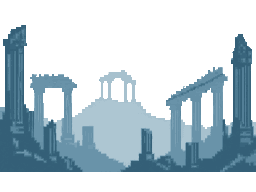
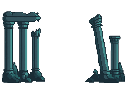
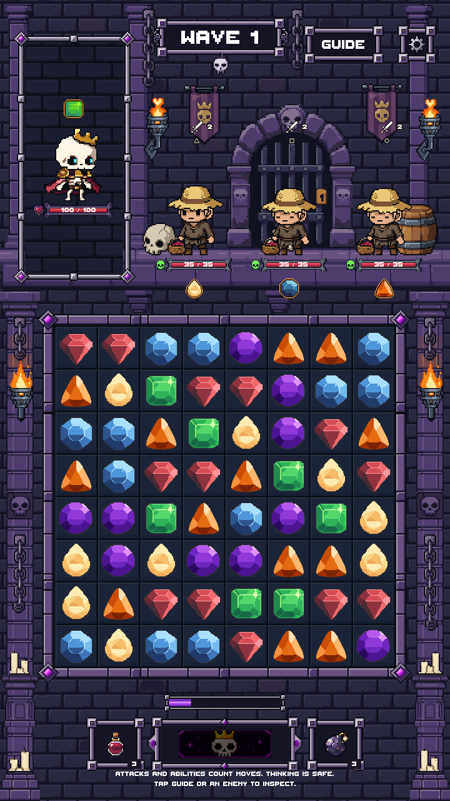
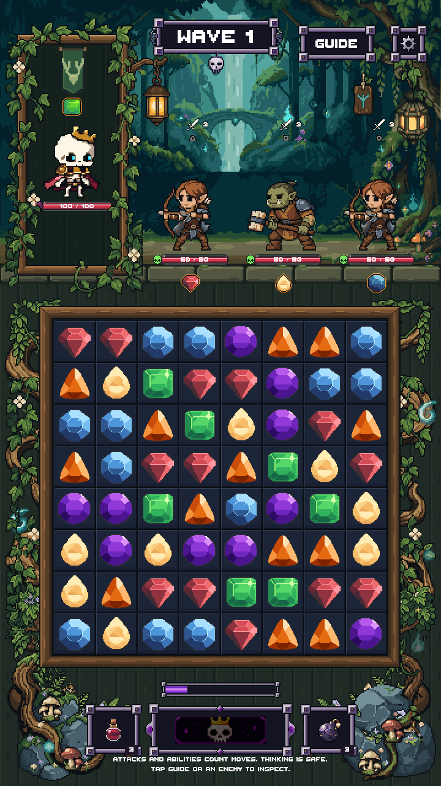
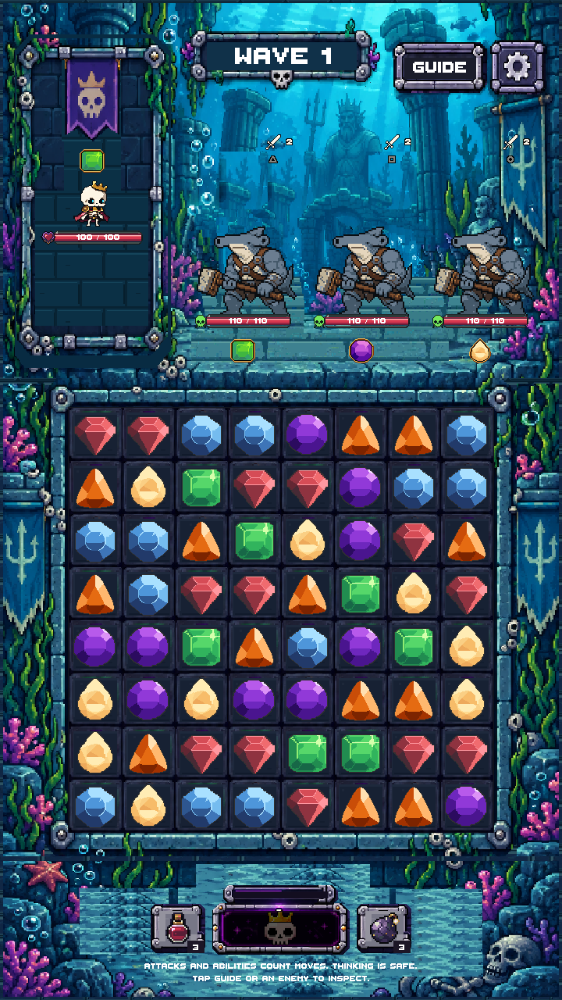
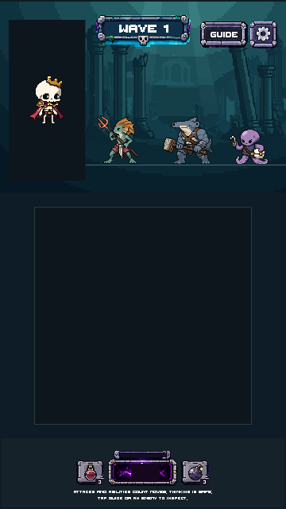
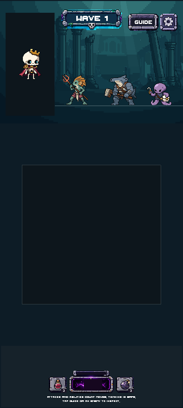

Drowned Court · Stage 01
CANDIDATE · Deep-water background only · Awaiting your review
Five separate native layers, two PixelLab sources and LibreSprite cleanup. 18 generations used; 624.20 remain. No production scene, character, gem, board or shared HUD changes. Foreground architecture, statue, floor and frames belong to later stages.
Verification and artistic notes · Stage 00 baseline
Actual Unity preview
Unchanged actor sprites are read-only contrast overlays. This is the art-only staging scene, not gameplay integration.
Before and after
Native layered composition
1× source view, followed by a 3× nearest-neighbor inspection. It is assembled from the separate layers below.
Five editable native assets
Raw PixelLab → LibreSprite
Far ruins · raw
Far ruins · cleanedMid ruins · raw
Mid ruins · cleaned
Source target and current production benchmarks
References are visual targets, not replacement character/UI artwork. The central statue and foreground architecture are later stages.
Current Dungeon / Forest / Court gameplay baselines (captured during Stage 00)



Full Unity staging views and original-resolution captures
Empty board and portrait are staging placeholders, not removed gameplay. All source files remain unchanged.
360×640 · 1× scenery pixels
360×800 · 1× scenery pixels
720×1280 · 720×1600 · 1080×1920 · 1080×2400 · Layers only
Stage 02 has not begun. Nothing merged. No device test claimed.